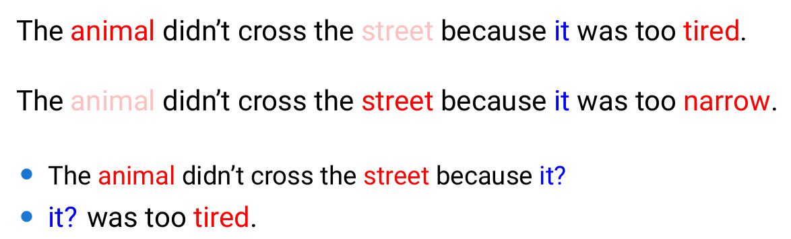

今天本来想补一下NLP尤其是GPT的相关知识,但看到一篇很好的博客讲了NLP领域的发展,这里记录一下.
写的很长,但是讲清楚了自然语言处理这个领域的每个阶段,能够学习到不少东西.
DeepLearning
word embedding经历
最开始NLP不同于其他学习类型,NLP的文本类型是离散类型而不是像数字类型一样的连续类型. 处理起来第一步肯定是类型转化,最简单的转化即one-hot. 每个标签算一列,n个标签n个列.
这就导致one-hot有致命问题,文本如果涉及成千上万的单词,那我们几千几万列的稀疏矩阵,处理起来就很麻烦.
其次,同种物品或者完全不同的物品在某种程度应该有相同点或区分点,而在one-hot里面就只有0或者1. 比如猫和狗,在one-hot的层面就是完全不同的东西,而不会考虑都是动物类型.
所以一种更理想的形式,以稠密向量来表示某个词的意义就成为了方向. 由此衍生出了一些处理方式.
Latent Semantic Analysis
包括occurence matrix和SVD.
occurence就是行表示词,列表示文档,每个元素表示词和文档的频率关系,有tf,idf,tf-idf等一类.
SVD即矩阵分解,将矩阵分解为左奇异向量右奇异向量和包含奇异值的对角矩阵,从对角矩阵里面选取k个奇异值最大的元素做相乘从而达到从n维降维到k维的目的.
word2vec
包含CBOW和Skip-Gram
CBOW即从context预测center word, Skip-Gram从center word预测context.
GloVe
Co-occurence + context window + decreasing weight
Co-occurence从词库构建矩阵, context window做规定大小内统计, decreasing weight负责在context window中距离不同的权重衰减.
DNN->CNN->RNN->LSTM
有了word embedding,就可以直接丢上nn进行最初步的训练了.
NN+CNN: 一开始是全连层, 后来CV领域的CNN也进入使用(可以看作是利用卷积获取某种程度的context window从而获取上下文).
RNN: 再之后是RNN, RNN更加优秀的点在于它每一个输出都是基于前面所有的输出, 后续序列的预测保留了前面的"记忆", 所以理论来讲RNN可以训练任意长度序列.
LSTM, GRU: 再之后是LSTM和GRU, 解决的是RNN中梯度消失的问题. 比如LSTM就是通过门控对RNN加上短期记忆的支持和长期记忆的选择遗忘从而解决RNN长度过长的时候会遗忘过去信息的问题, 而GRU是门控简化的LSTM.
Seq2Seq & Attention
Seq2Seq解决的问题是文本翻译或者从文本生成文本的问题, 具体做法就是input丢到encoder将输入编码成一个latent vector然后再由decoder对lantent vector进行还原.
Attention: 然而把整个长句全部编码到一个latent vector是困难的, 所以这里引入了attention. 即decoder对latent vector进行解码的时候会受到encoder中所有步骤的信息-即注意力权重的影响, 从而decoder知道哪个步骤我需要着重关注而哪些词无关紧要.
- 在Encoder-Decoder框架下，Decoder在解码的时候会“注意”到Encoder的隐状态序列，从而利用这些信息更好的解码。
- Encoder会把每一个输入的Token(可以理解为词)都编码成一个向量，在Decoder进行t时刻计算的时候，除了t-1时刻的隐状态和当前时刻的输入，注意力机制还可以参考Encoder所有时刻的输入。比如上面输入是"欢迎 来 北京"，那么在翻译第一个词的注意力可能是这样: (0.7,0.2,0.1)，表示当前最关注的是输入的第一个词，但是也会参考其它的词。假设Encoder的3个输出分别是𝑦1,𝑦2,𝑦3，那么我们可以用attention概率加权得到当前时刻的context向量0.7*𝑦1 + 0.2*𝑦2 + 0.1*𝑦3.
近代Deep Learning
Transformer
LSTM搭配Attention来处理Seq2Seq相关问题流行了起来, 但是RNN底层逻辑还是有问题:
- RNN下一步建立在上一步计算上,所以无法并行
- 当前RNN仅单向, 如果文本里面的context在当前时间t之后, 那么模型就无法获得信息.

Self-Attention
Transformer也是来自著名论文Attention Is All You Need, 该论文提出了使用SelfAttention来取代传统LSTM和GRU.
在Encoder-Decoder框架下，Decoder在解码的时候会“注意”到Encoder的隐状态序列，从而利用这些信息更好的解码.
在Transformer中, SelfAttention利用整个序列的embedding来计算当前token的embedding, 即每一个新的embedding都会包含有整个序列的信息.
\[ x_i’=\sum_{j=1}^{n}w_{ji}x_j \]
插曲
作者这里指出当时自然语言处理领域缺少单任务训练数据,导致解决一个问题可能还会连带解决很多中间问题. 作者表示这是技术发展不够的一种表现, 并且正是由于我们没有对专一任务的数据集, 最好的解决方案是能够让模型从无标注的文本中学习.
确实是正确的思考方式,不过当时我可能连numpy都没用过,就只能体会一下当时的背景了.
ELMo
Deep contextualized word representations, 给人直观感觉就是解决word vector层面的问题. 其能够基于上下文来从无标注的文本中学习相关Embedding(解决了前面提到的数据稀少问题), 并且能够动态生成词向量供模型使用.
以前的word embedding主要为了解决两个问题.
- 语法语义, 某词表示什么意思, 有什么特点.
- 不同场合的同词使用.
word2vec和GloVe解决了第一个问题,能够用向量表示某些词的意思,但是依然存在同词不同场景的使用情景. 经典的bank可以指银行也可以是水坝. 但是它们针对同一个确定token的word vector却总是相同的.
ELMo做出了两方面贡献
- 双向训练, 从前往后训练以及从后往前训练, 从而此token可以获得整个全文的信息而不至于从前往后的时候总是未知后续信息.
- 动态embedding
第一点容易理解, 在base model为LSTM的情况下, 单向训练确实会缺少大于t时间的信息, 双向训练获取全文信息也就容易理解.
第二点的动态embedding实现就比较巧妙了, token本身从GloVe或者word2vec就生成了自己的embedding, 那我们在针对某个词之前就用一个全连层连接原始的embedding和新产生的context, 从而整合context信息和原始词义达到动态embedding的效果.
当然ELMo只是一个上游任务, 后续具体任务可以直接搭在ELMo的基础之上.
GPT
Generative Pre-trained Transformer. 其思想相当于是使用transformer的decoder直接进行文本的生成, 最后依据具体任务对transformer进行finetuning.
Pretraining
Pretraining即训练模型使用transformer的decoder直接进行文本的生成.
但是这里存在问题, transformer的decoder里面用到了全局self attention, 其包含了前后文所有信息, 如果我们预先知道了全文信息那预测就是相当于作弊, 因此在训练的时候我们会对后续输入进行mask, 即下一字符的生成仅仅和前面的字符相关.
即使用的是Masked Self Attention.
监督的Fine-Tuning
无监督的Pretraining之后，我们再去针对特定任务进行Fine-Tuning.
BERT
BERT: Pre-training of Deep Bidirectional Transformers for Language Understanding 全称Bidirectional Encoder Representations from Transformers, 即双向的transformer encoder模型.
在transformer的基础之上, 即往前看也往后看, 整合整个句子的context information.
然后就是和GPT同样的问题, 如果我们已经具备了全文知识, 那么我们的训练其实是在作弊. 同样BERT也使用了mask.
举个例子, 一个句子里面我们mask掉15%的token, 那么一旦一个token落在这15%中, 我们可以选择替换成<mask>, 或者替换成其他token,又或者保持原有token, 然后让模型去训练. 此过程即训练模型并不能太过依赖词本身而是要考虑上下文.
除此之外,BERT还会对序列做Segment的区分, 从而判断两个句子是否是相连的, 甚至可以后续用来做问答使用.
GPT2 及以后
这部分内容挺多的,近期可以把原论文读一读然后再回头来看,毕竟不看论文总感觉少点意思.
不过NLP的发展之路也挺有意思的, 在此记录一下, 感谢李理的精彩记录, 受益匪浅.
https://fancyerii.github.io/2023/02/20/about-chatgpt
https://blog.csdn.net/qq_43689179/article/details/98478617
https://blog.csdn.net/qq_45848817/article/details/136889730
https://www.fanyeong.com/2018/02/19/glove-in-detail/
https://github.com/datawhalechina/learn-nlp-with-transformers/blob/main/docs/篇章2-Transformer相关原理/2.4-图解GPT.md